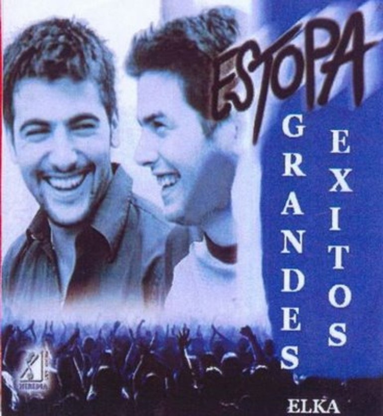

Esta es una de las frases que más escucho en el coche cuando llevo a mi hijo atrás. Él se encapricha de una canción y quiere que se la ponga todo el rato. Y la primera vez que nos pasó fue con un disco de Estopa. Será su primer recuerdo musical, y yo pensaré que algo he hecho bien como padre porque los primeros temas que se aprendió eran de unos amigos míos de Cornellà. El David y el Jose también se aprendieron sus primeras canciones en el coche, escuchando las cintas de los Chichos que le ponía su padre camino de Extremadura. Y en el coche es donde ahora ellos me ponen sus nuevos temas. Porque con el Jose y el David pasa una cosa. Tu quedas con ellos, te montan en su vehículo, y siempre llevan alguna grabación nueva que te ponen para que la escuches, para ver como reaccionas, mientras ellos van comentando: “Esa guitarra hay que subirla, ese tono está muy bajo, aquello entra tarde…”. Y cuando acaba la canción, se giran y te miran con esos ojillos brillantes de ilusión, como si fuese el primer tema que componen. Y esa es la gracia. Que no hayan perdido esas ganas. Algunos pronosticaron que lo de Estopa iba a ser flor de un día, que esto de los dos hermanos excurrantes de la SEAT estaba muy bien como reclamo marketinero, pero que su éxito iba a durar menos que la raja de una falda. Pero se olvidaron que lo que a veces parece marketing resulta que es auténtico. Y que cuando sales de abajo no se te olvida tan fácilmente de donde vienes, no se te olvida que la suerte existe pero mejor que te pille currando, y es lo que ellos no han parado de hacer estos más de 15 años. Poquito a poco me han ido colocando sus temas como tracks de la banda sonora de mi vida. Los dos chavales que se ponían en el campillo de delante de mi casa de Cornellà, con dos guitarras y se pasaban la tarde entera rasgándola. Qué orgulloso estoy de vosotros. De que seáis tan buena gente. De que no se os haya ido la olla. O de que se os vaya pero nunca por culpa del éxito. De que hayáis sabido madurar tan bien. Sin tonterías. Sin concesiones. Haciendo lo que sabéis hacer y cada vez mejor. Es como si llevaseis quince años haciendo el triplete. Qué ganas me están entrando de subirme en el coche, poner “Pastillas para dormir” a toda hostia, y dejarme la voz cantándola, acelerando un poco más, sin pa pa pastillas de freno, con el run run de mi mundo interior, hasta que me falte el aliento. Rumba a lo desconocido.
